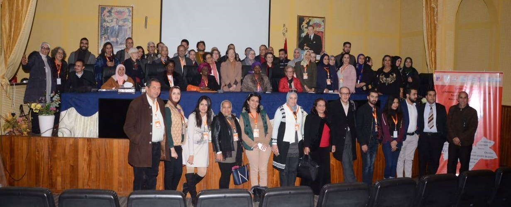
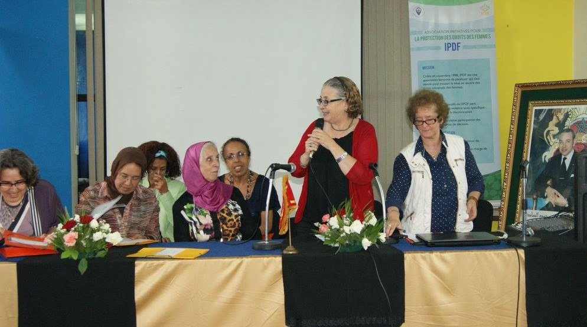

Association Initiatives Pour la Protection des Droits des Femmes
IPDF est une association féminine, autonome et non lucrative. Sa mission stratégique est la mise en œuvre de l’égalité entre les sexes dans les textes et dans les faits, via la défense des droits universels des femmes. Les objectifs de IPDF consistent à:
- Lutter contre toutes les formes de discrimination et toutes les formes de violence à l'égard des femmes et des filles conformément aux conventions et accords internationaux.
- Diffuser et consolider la culture de l'égalité.
- Contribuer à l’adoption de l'approche genre comme outil de planification pour les différents acteurs.
- Améliorer les conditions sociales et économiques des femmes et œuvrer au renforcement de leurs capacités.
Contexte de création
L’association IPDF a été créée en novembre 1998 dans un contexte sociopolitique dit « de transition démocratique » caractérisé notamment par un débat fort sur la place des droits des femmes dans cette transition , sur la relation entre « démocratie en politique et démocratisation de la société marocaine » entre « démocratie » et « modernisation des structures sociales dont la famille ». C’était également un contexte qui a connu le débat relatif au « Plan d’action pour l’intégration des femmes au développement (PANIFD, 1999-2000 ») ,et l’émergence d’une deuxième génération d’organisations féministes proclamant leur positionnement en faveur d’un développement démocratique, et partageant un référentiel universel des droits de la personne et participant au pluralisme du mouvement pour les droits des femmes, à sa diversité, à sa spécialisation selon plusieurs domaines d’intervention, à une meilleure et plus large implantation géographique dans les régions, à son autonomisation progressive.
La création de l’IPDF trouve sa justification aussi dans l’analyse que ses fondatrices ont fait du contexte et de la réalité marocaine où, face à un discours officiel proclamant l’engagement ferme de l’état marocain envers le respect des droits, on constatait que:
- les conditions de vie des femmes, particulièrement les plus démunies et les plus vulnérables à la pauvreté et à la violence étaient intenables du fait des difficultés d’accès à la santé, à la justice, et à l’emploi, ainsi que des discriminations juridiques à leur égard.
- la résistance à la mise en pratique des droits des femmes comme partie indivisible des droits de la personne, et qui se faisait de plus en plus forte au nom du « sacré », du « prioritaire » ou parfois même de « l’universalisé trompeur ».
- il y avait une contradiction flagrante entre une forte implication des femmes dans la lutte pour la démocratie, et leur statut juridique de mineures qui légitimait toutes les formes de discrimination à leur égard.
Des valeurs liées à la justice sociale, à la dignité humaine, à la solidarité nationale et internationale, à la transparence et à la démocratie interne constituaient des points d’ancrage du contrat moral entre les fondatrices, et l’idéal partagé était celui d’un autre Maroc possible, un Maroc moderne ou les relations de genre seraient égalitaires, et les écarts sociaux, le racisme, le terrorisme et la xénophobie fermement combattus.
Soutien aux femmes victimes/survivantes de violences
Sa contribution à la réalisation de cette vision s’est faite via un soutien fort aux survivantes de la Violence Basée sur le Genre et qui a été une priorité de l’IPDF depuis sa création.
En 2000, IPDF a créé le 1er centre d’écoute pour Femmes victimes de violences dans la région centre-nord du Maroc. IPDF est cofondatrice du 1er Réseau National des Centres d’Ecoute des Femmes Victimes de Violences dont la mission consiste à contribuer au renforcement des capacités des associations dans les domaines de la défense des droits des femmes et de la lutte contre les violences à leur égard.
En 2009 IPDF créa le Centre Multifonctionnel Batha pour l’autonomisation des femmes qui contribue à l’amélioration de la situation des femmes survivantes via leur accès à des services coordonnés, complémentaires et adaptés. Ces services constituent une Chaine systémique intégrée qui s’appuie sur un ensemble d’approches, de principes et de processus orientés par l’Approche Féministe Globale qui guide les interventions du Centre Batha et le distingue comme établissement porteur de valeur ajoutée en termes d’autonomisation des Femme Victimes de VFG au sein de l’écosystème de leur prise en charge. Cette chaine comprend des interventions correspondant aux services-essentiels pour appuyer les droits, la sécurité et le bien–être des femmes et des filles victimes de violences, y compris des informations en cas de crise et des lignes d’assistance, un hébergement sûr, des informations juridiques et sur les droits et des conseils.
IPDF a fait dès le départ le choix de travailler dans le cadre de réseaux d’associations avec lesquelles elle partage le référentiel et les valeurs. Elle a fait partie :
- du printemps de l’égalité qui a œuvré pour la réforme du code de la famille.
- de l’espace associatif qui regroupe les associations de développement démocratique.
- du réseau national Anarouz de centres d’écoute pour les femmes victimes de violences.
- de la dynamique locale TITRIT, constituée d’associations qui offrents des services de prise en charge pour les femmes victimes de violences et/ou de discriminations à Fès.
- de la coalition du printemps de la dignité pour des législations qui protègent les femmes de la violence et prohibent les discriminations.
Principes d'action
Les 8 principes d’action de l’IPDF correspondent à ses approches, ses méthodes et ses démarches d’intervention sont les suivants:
- Approche Féministe Globale: elle consiste à traiter la violence basée sur le genre de façon holistique. Toutes les dimensions individuelle, sociale, culturelle et économique de la violence et discrimination sont prises en considération. La femme est située au centre de l’intervention .
- Politique de Confidentialité: elle fait référence aux règles et aux procédures à respecter par les membres et tout-es les intervenant-es de l’IPDF, ainsi que les différents acteurs impliqués dans les interventions de l’IPDF. Toutes les informations relatives aux usagères leur appartiennent et toute diffusion d’informations ne peut se faire sans leur consentement. La confidentialité s’applique à la direction, aux employé-es et aux volontaires de l’IPDF.
- Empowerment: Le changement « autonomisation » est une ligne directrice principale de toutes les composantes stratégiques et opérationnelles du Plan Stratégique de l’IPDF qui sont orientées vers cet objectif de changement. L’autonomisation permet aux interventions de l’IPDF de s’inscrire dans un processus d’Empowerment basé spécifiquement sur la notion du « Pouvoir ». Si les violences / discriminations basées sur le genre sont un reflet de la relation de pouvoir entre les hommes et les femmes dans une société patriarcale ; la rupture du cycle des violences / discriminations et leurs connotations socio-économiques passe par la redistribution et la transformation de ce pouvoir en faveur d’une Égalité entre les sexes.
- Approche Systémique: Le principe de la « Systémique » met les interventions de l’IPDF dans une dynamique plus intégrée et la plus complète possible. La notion de « Systémique » fait référence aux interventions de l’IPDF comme un système. C’est-à-dire qu’elles s’inscrivent de façon transversale dans le processus d’autonomisation des femmes. Il s’agit également d’une dynamique interactive, itérative et de complémentarité entre les différents interventions de l’IPDF au niveau de toutes ses composantes développementales et organisationnelles.
- Partenariat et Synergie de Coordination: Le processus de partenariat avec les différentes acteurs institutionnels, académiques et de la Société Civile fait référence au processus d’accords et de collaborations bilatérales orientées vers l’autonomisation des femmes victimes des violences/discriminations basées sur le genre. Le processus de synergie de coordination est un autre aspect de partenariat basé notamment sur la mise en place des dynamiques de réseautage continus et d’alliances solides. Cela implique que les interventions de l‘IPDF doivent être structurées et réorientées - en concertation avec les acteurs institutionnels et de la société civile - vers une dimension holistique de l'autonomisation des femmes.
- Capitalisation: La capitalisation consiste à systématiser puis à documenter les différentes pratiques de l’IPDF. Elle fait référence à la transformation du savoir et du savoir-faire accumulé par l’IPDF en connaissances partageables, à travers l'identification et la normalisation d'un ensemble de pratiques et d’expériences (processus, procédés, approches, etc.).
- Recherche-Action: La Recherche-Action fait référence aux différentes actions de recherches, études et espaces de réflexion permettant d’appuyer la réorientation des interventions, des expériences et des pratiques de l’IPDF vers sa mission et de façon intégrés, complémentaires et adaptés en faveurs des femmes victimes de la violence / discriminations basées sur le genre.
- Réflexibilité et Innovation: fait référence à la démarche de réflexion critique à la fois introspective - qui permet un retour sur soi de l’IPDF pour analyser sa propre manière d’agir et de procéder, mais aussi interrogative – puisque elle permet aux membres de l’IPDF de comprendre mieux sa structure et son évolution pour mieux se l’approprier à tous les niveaux – en visant l’amélioration continue de la qualité des processus de l’IPDF et l’efficacité de mise en place de ses interventions, dans une perspective d’innovation.
Soutenez le programme
Nous avons besoin de votre soutien pour continuer notre travail. Votre don nous aidera à poursuivre nos actions en faveur de l'égalité des genres et de l'autonomisation des femmes.